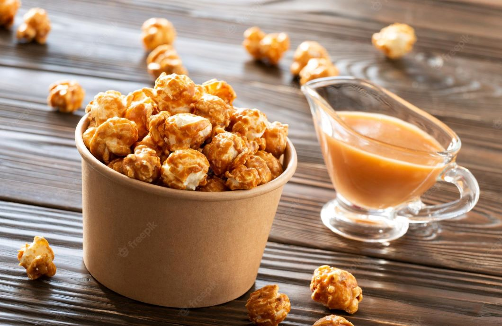

Pipoca Caramelizada

Receita
Ingredientes
- 4 colheres de sopa de milho de pipoca
- 4 colheres de sopa de açúcar
- 4 colheres de sopa de água
- 3 colheres de sopa de óleo
Modo de Preparo
- Colocar em uma panela todos os ingredientes.
- Mexer até que se forme uma calda em que o milho de pipoca ficará envolvido.
- Assim que o milho de pipoca começar a estourar tampe a panela e deixe as pipocas estourarem.
- Importante: Enquanto as pipocas estouram você deve sacudir a panela para que as pipocas sejam envolvidas na calda e fiquem carameladas.
- Na pipoqueira pode-se seguir o mesmo procedimento